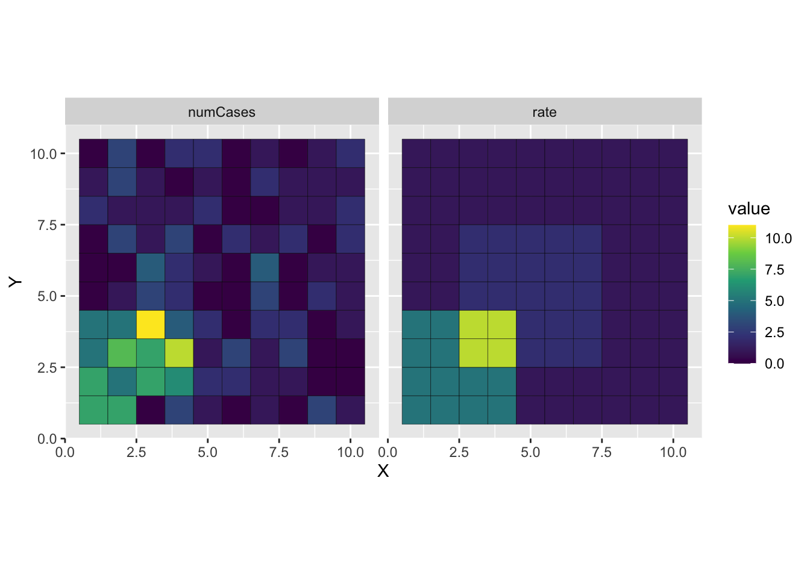

library(tidyverse)
library(spdep)6 Getis-Ord \(G_i^*\)
6.1 Loading Packages
6.2 Some helpful functions
makeSquareGrid <- function(D) {
x_coords <- 1:D
y_coords <- 1:D
## The expand.grid function creates a data frame
## with all possible combinations of the
## input elements
grid_df <- expand.grid(x_coords, y_coords)
## Set the variable names
colnames(grid_df) <- c("X", "Y")
## Each cell also gets a unique ID from 1:D^2
grid_df$cellID <- 1:nrow(grid_df)
return(grid_df)
}overlappingRiskGrid <- function(D, N, alpha = 1, bl_rr = 2.0, center_rr = 2.0) {
grid_df <- makeSquareGrid(D)
grid_df$N <- N
## This is the background, per-capita rate in each
## cell of our city
baseline_per_capita <- alpha
## Here, we initialize a variable for the per-capita rate
## within each cell
grid_df$rate <- 0
## Make the middle risk area 4 x 4 and the top-left area also 4x4
center_low_xy <- round(D / 2) - 2
center_high_xy <- round(D / 2) + 2
## This is filling in the per-capita rates for each cell
## as a function of where they are on the grid (assuming a 10 x 10 grid)
grid_df <- grid_df %>%
mutate(bl = case_when(between(X, 1, 4) & between(Y, 1, 4) ~ 1,
.default = 0
)) %>%
mutate(center = case_when(between(X, center_low_xy, center_high_xy) & between(Y, center_low_xy, center_high_xy) ~ 1,
.default = 0
)) %>%
mutate(rate = exp(log(alpha) + log(center_rr)*center + log(bl_rr)*bl))
## Now we can also draw the number of cases observed in
## each grid celll
grid_df <- grid_df %>%
mutate(p_disease = 1 - exp(-rate / N))
## Simulate the observed number of cases in each cell
## as a function of the population size (N) and probability of diseaw
grid_df$numCases <- rbinom(nrow(grid_df), grid_df$N, grid_df$p_disease)
return(grid_df)
}- 1
- Create a binary indicator variable designating whether a cell is in the center hot or cold spot.
- 2
- Create a binary indicator variable designating whether a cell is in the bottom-left hot or cold spot.
- 3
- Calculate the total rate at location \(i\) as the sum of the logged relative risks multipled by binary indicators.
- 4
- Convert this continuous rate to a probability using the exponential cumulative distribution function.
6.3 Simulate input data
D <- 10
cityData <- overlappingRiskGrid(D, 100, 1, 5 , 2)
cityDataLong <- cityData %>%
pivot_longer(c(rate, numCases))
g <- ggplot(cityDataLong) +
geom_tile(aes(x = X, y = Y, fill = value), colour = "black") +
coord_equal() +
facet_wrap(~name) +
scale_fill_viridis_c()
plot(g)- 1
- Set grid dimension.
- 2
- Simulate outcomes based on input values.
- 3
-
Convert to long format to enable plotting with
facet_wrap. - 4
- Plot rates and simulated cases in a 2-panel figure.

Exercises
Try expanding the dimension of the grid to get a sense of the overall patterns.
Vary the size of the population in each cell to see how that impacts the difference between the simulated counts and underlying rates.
Visualize the counts and rates as a histogram. Does this provide any insight you don’t get from the spatial representation?
6.4 Getis-Ord G* and Gi*
We can calculate the local Gi* statistic using the equation below:
\[ G_i^* = \frac{\sum_j w_{ij} x_j}{\sum_j x_j} \tag{6.1}\]
Practically speaking, the numerator in Equation 6.1 contains the weighed sum of the outcome of interest across all of the neighbors of location \(i\) as well as the value of \(x_i\). The denominator contains the sum across all locations in the dataset. So, the value of \(G_i^*\) at a given location is the ratio of the weighted sum of neigboring values and the total.
The code below shows how to calculate values of the local Getis-Ord Gi* statistic using a neighbor list constructed using spdep functions:
gridNeighbors <- include.self(
cell2nb(D, D, type = "queen", torus = FALSE)
);
nbw <- nb2listw(gridNeighbors, style = "B")
num_loc <- length(nbw$neighbours)
gi_vals <- rep(0, num_loc)
totalCases <- sum(cityData$numCases)
for (i in 1:num_loc) {
neighborIndices <- nbw$neighbours[[i]]
weights <- nbw$weights[[i]]
gi_vals[[i]] <- sum(cityData$numCases[neighborIndices] *
weights) / totalCases
}- 1
-
This function adds the self-neighbor relation required by \(G_i^*\) to the neighbors object created by
spdep. - 2
- Turn the neighbors object into a neighbor list.
- 3
- Create an empty vector to store \(G_i^*\) values.
- 4
- Calculate the total number of cases to be used when calculating the denominator from Equation 6.1.
- 5
- Loop over all locations to calculate each \(G_i^*"\) value.
- 6
- Pull out the indices of the neighbors of location \(i\).
- 7
- Extract the weights calculated for each neighborhood.
- 8
- Bring it all together to calculate the value of \(G_i^*\) at location \(i\).
cityData$giStar <- gi_vals
g <- ggplot(cityData) +
geom_tile(aes(x = X, y = Y, fill = giStar), colour = "black") +
coord_equal() +
scale_fill_viridis_c()
plot(g)Exercises
Change the underlying rates in the model and relative risks. How does this appear to change the values of the Gi* stat?
Which values of Gi* in the maps you generate reflect a ‘real’ cluster (based on the input parameters) and which might be artifacts of random sampling?
Change the way neighbors are calculated from queen to rook’s adjacency. What happens? Does this effect seem more pronounced under different input datasets? Why?
6.5 From local to global clustering: Calculating \(G^*\)
We can caclculate the global version of \(G^*\) as a weighted sum of \(G_i^*\) values, i.e.:
\[ G^* = \frac{\sum_{i} x_i G_i^*}{\sum_i x_i} \]
This makes it easy to calculate \(G^*\) using our pre-computed \(G_i^*\) values:
gs <- sum(cityData$numCases*cityData$giStar)/sum(cityData$numCases)
print(gs)[1] 0.1426489Exercises
What input values to
overlappingRiskGridgive you the largest values of \(G^*\)? Are these similar or different from the values that generate robust local clusters?How about the lowest?
Thinking theoretically, what scenario do you think would generate the highest possible value of \(G^*\)? The lowest? Why?
6.6 Calculate Getis-Ord Gi* for simulated data using spdep
gridNeighbors <- include.self(cell2nb(D, D, type = "queen", torus = FALSE))
xyc <- attr(gridNeighbors, "region.id")
## Extracts the x,y coords of each cell
xy <- matrix(as.integer(unlist(strsplit(xyc, ":"))), ncol = 2, byrow = TRUE)
xy <- data.frame(x = xy[, 1], y = xy[, 2])
gridNeighborList <- nb2listw(gridNeighbors, zero.policy = TRUE, style = "B")
localGEst <- localG(cityData$numCases, gridNeighborList)
cityData$cluster <- attr(localGEst, "cluster")
cityData$gScore <- as.vector(localGEst)
cityData$sig <- as.numeric(abs(as.vector(localGEst)) > 3.2)6.7 Plot labeled outcomes
g <- ggplot(cityData, aes(x = X, y = Y)) +
geom_tile(aes(fill = gScore)) +
geom_text(aes(label = sig), color = "white") +
coord_equal() +
scale_fill_viridis_c()
plot(g)